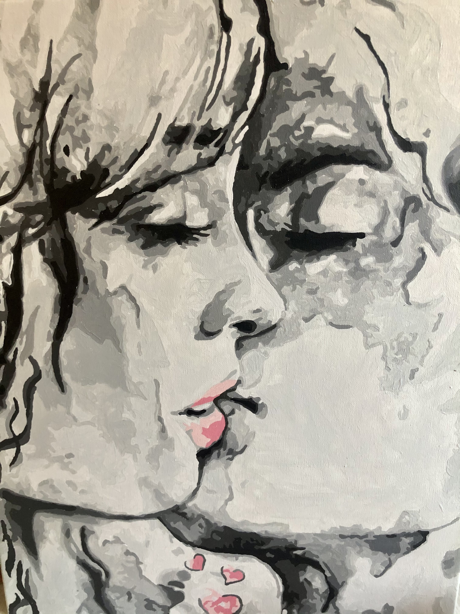

About the Painting
The painting was created in August 2020 by an anonymous. It’s a first acrylic painting made by a beginner-artist from Ukraine. From the first sight, it shows a couple being madly in love, however, there’s more to it. This picture is not just about love, rather it displays ease and lightness of relationships, which so many adults have forgotten about. Even though the couple is kissing so passionately, their feelings are indeed deep and pleasant, it isn’t weighted by feelings of betrayal, sadness and complication. The beloved are just kissing there, and they are happy. They accept each other. That’s exactly what the painting represents.
Ease. Ease which so many people need. Ease and deepness.
